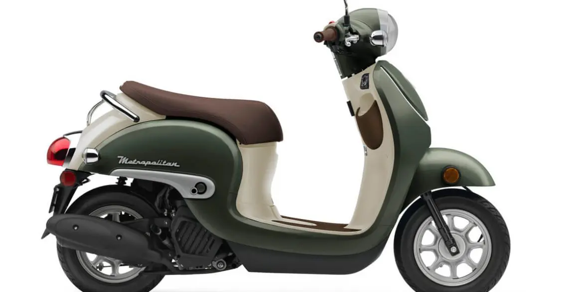

Today's Highest Temperature:

"Empower your island adventure by planning ahead with Scoots Rental! Discover our comprehensive rental services tailored for savvy customers who prefer to research before arrival. Unveil all the essential details, requirements, and seamless rental processes to streamline your journey towards unforgettable experiences on the island!"
Find the Perfect Scooter for you!
Honda Motor Scooters
Honda Metropolitan (49cc) - 1 person
Cruise through island streets with ease on our Honda Metropolitan (49cc), designed for urban exploration and solo journeys. Compact and efficient, this scooter is perfect for navigating busy streets, offering nimble handling and economical travel for one rider. Experience the convenience and style of this modern urban commuter, making every ride a delightful adventure.
Honda Dio (110cc) - 2 person

Embrace the spirit of urban mobility with our Honda Dio (110cc), an agile and versatile scooter designed for two. Perfect for zipping through city streets, this sleek ride offers effortless maneuverability and comfortable seating for two passengers. Experience the convenience of modern commuting with the Honda Dio, where every journey becomes a shared adventure.
Honda PCX150 (149cc) - 2 person

With an automatic transmission, nimble maneuverability, and underseat storage a scooter is a great choice for those dealing with congested city roads/parking lot mayhem. A modern-styled scooter like the 2020 Honda PCX150 is optimal for the around-town rat race because it features a 149cc engine encased under sporty bodywork. It has plenty of legroom, side- and centerstand, LED lighting throughout, 12-volt accessory adapter, 7 gallons of storage, and a stepped saddle for a comfortable two-up ride. ABS is an option at a $300 increase.
Side-by-Side ATV's
Honda Pioneer 1000 - 4 person

The four-door Pioneer 1000-6 Crew measures 152.2 inches (3,866 mm) long, 63 inches wide (1,600 mm) wide, and 76.1 inches (1933 mm) tall, with a wheelbase of 115.2 inches (2,926 mm). This makes it 35,1 inches (892 mm) longer than the two-door Pioneer 1000. The stretched wheelbase results in 28 inches (711 mm) of legroom which according to Honda is best-in-class. Besides the full-size rear bed, there is also under-seat storage in both rows.
Jeeps
Jeep Wrangler - 4 door manuel with A/C - 5 person

"Experience rugged versatility and exhilarating freedom with our Jeep Wrangler - a 4-door manual transmission equipped with air conditioning, perfect for up to 5 adventurers. Conquer any terrain in style while enjoying the comfort and convenience of modern amenities. Whether it's a scenic drive or an off-road escapade, this iconic vehicle promises an unforgettable journey packed with thrills and memories."
Jeep Wrangler - 2 door - open air - manuel - 4 person

Embark on the ultimate adventure with our Jeep Wrangler - a 2-door, open-air marvel, complete with a manual transmission and seating for up to 4 passengers. Feel the wind in your hair and the thrill of the road as you explore the great outdoors in style. Perfect for those seeking an authentic off-road experience with unmatched freedom and excitement.
Current Temp:
Current Humidity:
Tomorrow's Weather: